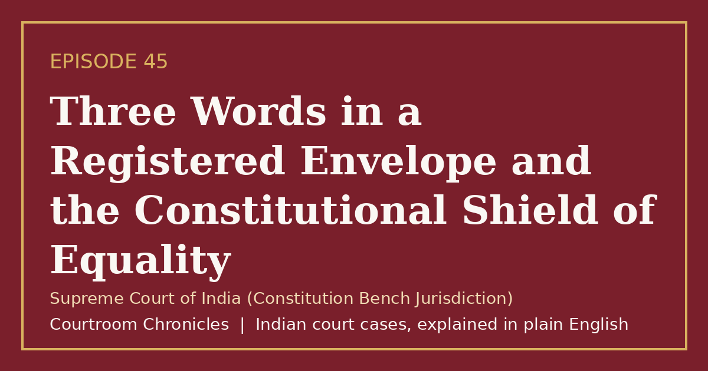

Episode 45
Three Words in a Registered Envelope and the Constitutional Shield of Equality
A landmark constitutional judgment invalidated instant unilateral divorce to protect the fundamental rights and human dignity of married women.
Constitutional lawGender justiceFundamental rightsPersonal lawArticle 14 equality
#CourtroomChronicles#IndianLaw#GenderJustice#EqualRights#ConstitutionalLaw#WomensRights#SupremeCourtOfIndia

Listen
- Court
- Supreme Court of India (Constitution Bench Jurisdiction)
- Date of Decision
- August 22, 2017
- Bench Strength
- Five-judge Constitution Bench representing multiple religious traditions
- Custom Challenged
- Talaq-e-biddat or instant irrevocable unilateral triple talaq pronounced in a single breath
- Constitutional Ground
- Violation of fundamental equality and manifestation of unguided arbitrariness under Article 14
Key takeaways
- Instant unilateral divorce is legally void and confers no lawful consequence upon marital status.
- Personal laws and customary traditions are subject to constitutional scrutiny under the guarantee of fundamental equality.
- Parliament enacted statutory protections criminalizing attempts to pronounce instant triple talaq.
The case in brief
When a mother of two children received a postal envelope containing a deed pronouncing instant irrevocable divorce in a single breath, fifteen years of marriage were terminated without prior notice, reconciliation, or judicial oversight. The petitioner joined hands with other deserted women and civil society groups to challenge the entrenched patriarchal practice directly before the Supreme Court as a violation of fundamental rights.
Religious representative bodies defended the custom, arguing that personal laws formed an integral part of religious freedom shielded from judicial scrutiny under constitutional guarantees. Conversely, the petitioners and the union government contended that practices granting men unbridled unilateral power to dissolve marriages instantly reduced women to vulnerable dependents, violating equality, non-discrimination, and human dignity.
The five-judge Constitution Bench held by a three-to-two majority that instant triple talaq is unconstitutional, null, and void. The court ruled that an arbitrary form of marital dissolution that permits capricious termination without any attempt at reconciliation violates the fundamental guarantee of equality under the doctrine of manifest arbitrariness, paving the way for comprehensive statutory protection.
Timeline
- Unilateral Repudiation
A married woman receives a registered postal envelope containing an irrevocable deed of instant divorce.
- Constitutional Writ Petition
A writ petition is filed before the Supreme Court challenging the constitutional validity of instant unilateral divorce.
- Constitution Bench Hearings
A five-judge Constitution Bench concludes six days of marathon constitutional and theological arguments.
- Invalidation Ruling
The Supreme Court sets aside instant triple talaq by a majority verdict, declaring it void and unconstitutional.
- Parliamentary Legislation
Parliament enacts specialized legislation declaring instant triple talaq void and prescribing criminal penalties.
What the court decided
Writ petitions allowed; the practice of Talaq-e-biddat (instant triple talaq) set aside and declared unconstitutional, null, and void by a 3:2 majority.
Key holdings
- Talaq-e-biddat is not an essential religious practice under Article 25 and what is bad in theology cannot be legally recognized as good in law.
- Statutory recognition of unilateral instant divorce under personal law statutes violates Article 14 due to manifest arbitrariness.
- An unguided and capricious power vested in one spouse to sever marital ties without reconciliation infringes fundamental human dignity.
- Fundamental rights under Part III of the Constitution prevail over discriminatory customs that deny equal status to women.
Legal principles
Doctrine of Manifest Arbitrariness
Legislation or statutory rules that are capricious, irrational, unreasonable, or lack determining principle violate the equality guarantee of Article 14.
In this case: The court held that allowing a marriage to be broken instantaneously on mere whim without attempts at reconciliation is manifestly arbitrary and unconstitutional.
Essential Religious Practices Test
Only practices foundational and indispensable to a faith receive constitutional immunity under freedom of religion guarantees.
In this case: The majority established that instant irrevocable repudiation was condemned by theological authorities themselves, proving it was not an essential religious practice.
Constitutional Morality Over Customary Inequality
Customary norms and personal laws cannot infringe the foundational values of human dignity, gender equality, and equal protection of laws.
In this case: The court affirmed that gender justice is non-negotiable and that women cannot be relegated to secondary status through unilateral marital repudiation.
The law then and now
The constitutional challenge evaluated customs under the Muslim Personal Law (Shariat) Application Act, 1937 against constitutional fundamental rights, resulting in the subsequent enactment of the Muslim Women (Protection of Rights on Marriage) Act, 2019 alongside general criminal procedural transitions under the Bharatiya Sanhitas.
Left: the law applied to this case. Right: the matching provision today (the new criminal codes apply only to offences on or after 1 July 2024).
Enacted statutory declaration rendering any pronouncement of instant triple talaq void, illegal, and cognizable.
- Bharatiya Nagarik Suraksha Sanhita, 2023Section 144Order for maintenance of wives, children and parents
Re-enacted statutory rights ensuring secular financial maintenance and subsistence allowances for deserted women.
- Indian Penal Code, 1860Section 498AHusband or relative of husband of a woman subjecting her to cruelty
Re-enacted comprehensive penal sanctions punishing domestic abuse, dowry harassment, and physical torment. See all 2 episodes on this provision →